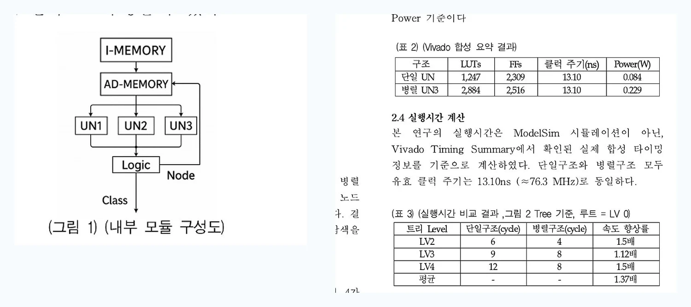
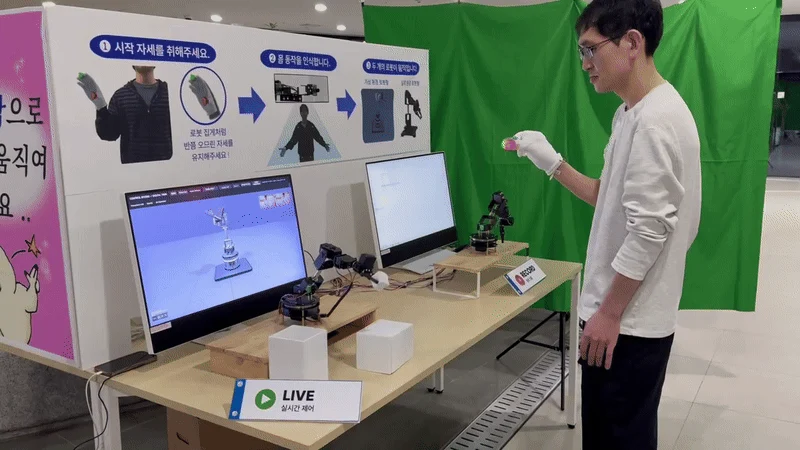
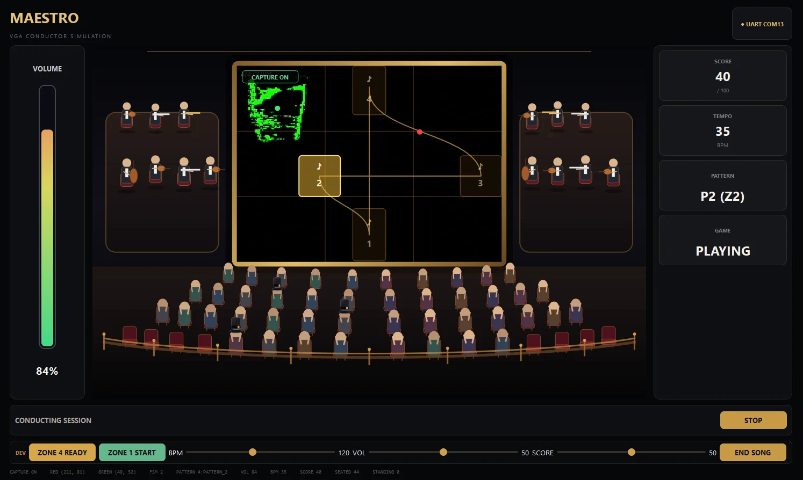

↗01 / RESEARCH · FIRST AUTHOR
병렬 결정트리 RTL
현재 노드와 좌우 자식 노드를 함께 계산해, 한 입력 벡터의 트리 탐색 시간을 줄인 하드웨어입니다.
MY ROLE
3-UN Datapath·FSM 설계, 결과 동등성 검증, 제1저자 논문 작성·발표
논문 실험 평균 1.37× · RTL 회귀 37/37
2025.07 — 2025.11프로젝트 상세 ↗
01 / SKILLS
Verilog · SystemVerilog
C · Python
Verilog · SystemVerilog
FSM / Datapath · 영상 좌표 처리
병렬 연산 구조와 프레임 단위 제어 RTL 설계
SystemVerilog TB · UVM
Scoreboard · Assertion · Coverage
정상·오류 시나리오 자동 비교와 파형 분석
Vivado / Vitis · Zynq · MicroBlaze
AXI4-Lite · UART · SPI · I2C
Custom IP·C 드라이버·FPGA 보드 연동
C · Python · C# / Unity
STM32 · ESP32 · Linux · Git
출력 제어·기록/재생과 PC 가상환경 구현
02 / SELECTED WORK
담당 역할 · 설계 판단 · 검증 결과
전체 14개 프로젝트

↗01 / RESEARCH · FIRST AUTHOR
현재 노드와 좌우 자식 노드를 함께 계산해, 한 입력 벡터의 트리 탐색 시간을 줄인 하드웨어입니다.
3-UN Datapath·FSM 설계, 결과 동등성 검증, 제1저자 논문 작성·발표
논문 실험 평균 1.37× · RTL 회귀 37/37

↗02 / TEAM PROJECT · 최우수상
두 카메라의 관절 인식을 Zynq 5축 로봇팔의 실시간 추종과 동작 기록·재생으로 연결했습니다.
AXI4-Lite PWM IP, C 출력 제어·Record/Replay, 그리퍼 안정화, Unity 가상환경
5축 · 20 ms 제어 · 최우수상
03 / INDIVIDUAL · HW / SW
5종 Custom IP와 C MMIO 드라이버를 설계하고 두 대의 FPGA 보드 통신까지 연결했습니다.
GPIO·Timer·UART·SPI·I2C LCD IP, Register Map, Vitis C 제어, 보드 통합
IP 5종 · SPI 32/32 · I2C 30/30 PASS

↗04 / TEAM PROJECT · VIDEO RTL
OV7670 영상의 빨강·초록 표식 좌표를 계산하고 지휘 게임과 PC MAESTRO UI에 전달했습니다.
xy_detection·song_decoder RTL/TB, 군집화·프레임 동기화, FPGA–PC UI 연동
320×240 입력 · RED/GREEN X·Y 40-bit
05 / INDIVIDUAL · SELF-CHECKING TB
정상·오류 응답을 자동 비교하고, 무작위 트랜잭션과 Functional Coverage로 검증 조건을 확인했습니다.
UVM 환경·Driver·Monitor·Scoreboard·Coverage, Directed / Random 시나리오
SPI·I2C 각각 10,000 transactions · 0 FAIL
03 / ABOUT
학부연구에서는 병렬 결정트리의 Datapath와 FSM을 설계했습니다. 이후 AXI4-Lite IP, 영상 좌표 처리, Zynq 출력 제어로 경험을 넓히며 모듈 사이의 데이터 흐름을 다뤘습니다.
예상과 다른 결과가 나오면 입력·상태·유효 시점을 나누어 확인합니다. 테스트벤치의 기대값 비교와 실제 FPGA 연동을 함께 살피는 설계·검증 엔지니어로 성장하고 있습니다.
2020.03 — 2026.02
2026.03 — 2026.10
2025.11.15 / RESEARCH
CNN 모션인식 SoC 플랫폼 · 7인 팀
5개 팀 중 2위 · 전체 참가 34명
PWM IP·출력 제어·동작 기록/재생·Unity 담당
04 / CONTACT
프로젝트별 구현 코드와 검증 조건은 상세 페이지와 GitHub에서 확인할 수 있습니다.